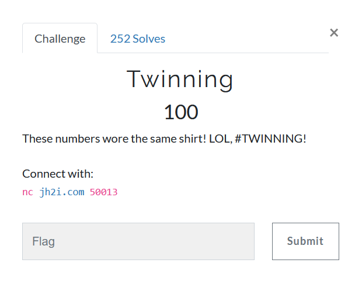

Twinning

The name of the challenge is a subtle hint towards Twin primes, i.e. the RSA primes p and q being twin primes, at a difference of two.
How does that help?
We can now easily factor n since we have another relation, namely
q = p + 2 and
p*q = N
q^2 - q*p = N
( q - 1 )^2 = N + 1
q = sqrt( N + 1 ) + 1
p = sqrt( N + 1 ) - 1
One can easily solve a quadratic equation to find p
Once p and q are found, rest is a piece of cake
Although the time was not a concern, I still wrote a small script
from pwn import remote
import gmpy2
import re
HOST, PORT = "jh2i.com", 50013
REM = remote(HOST, PORT)
data = REM.recvuntil(b'What is the PIN?')
print(data.decode())
e_n = re.search(b'(\d+),(\d+)',data)
e = int(e_n[1])
n = int(e_n[2])
PIN = int(re.search(b'is (\d+)',data)[1])
def factor(n,e):
a = gmpy2.iroot(n+1,2)[0]
phi = (a-2)*(a)
return gmpy2.invert(e,phi) # returns d
DECRYPTED_PIN = pow(PIN, factor(n,e), n)
REM.sendline(str(DECRYPTED_PIN).encode())
print(REM.recvline().decode())
print(REM.recvline().decode())
print(REM.recvline().decode())